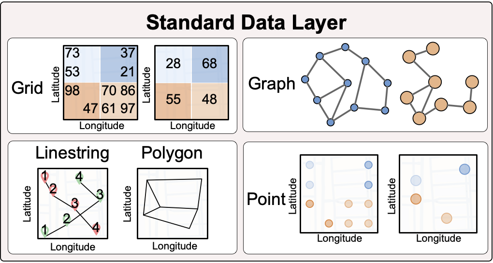

UDL Class¶
Overview¶
{kind=link}
GridLayer¶
class GridLayer(name, start_lat, end_lat, start_lon, end_lon, step_lat,
step_lon, year=None)
name (string) - Name of the layer
start_lat (float) - Starting latitude
end_lat (float) - Ending latitude
start_lon (float) - Starting lontitude
end_lon (float) - Ending lontitude
step_lat (float) - The difference of latitude between cells
step_lon (float) - The difference of lontitude between cells
year (int) - The year of dataset
PARAMETERS:
data (numpy.array) - The data of GridLayer
PARAMETERS:
lat (float) - Latitude to be queried
lon (float) - Longitude to be queried
RETURNS:
value (float) - Value at the queried location
PARAMETERS:
lat (numpy.array) - Latitudes to be queried in an array of one dimension
lon (numpy.array) - Longitudes to be queried in an array of one dimension
RETURNS:
value (numpy.array) - Values at the queried locations in an array of one dimension
GraphLayer¶
class GraphLayer(name, year=None, directed=False)
Note
The methods of NetworkX are also available for the GraphLayer’s data object (GraphLayer.data).
name (string) - Name of the layer
year (int) - The year of the dataset
directed (bool) - Whether the graph is directed
PARAMETERS:
node_label (list) - The list of the name of node
latitude (list[float]) - The list of the latitude of node
longitude (list[float]) - The list of the longitude of node
node_attribute (list) - The list of the attribute (whose name is layer’s name) values of node (optional)
RETURNS:
node_list (list[tuple]) - The list of the tuple which can be used to construct the graph nodes
PARAMETERS:
source (list) - The list of the source nodes of each edge
target (list) - The list of the target nodes of each edge
edge_attribute (string) - The attribute name of edge (optional)
edge_weight (list[float]) - The list of the weight of edge (optional)
RETURNS:
edge_list (list[tuple]) - The list of the tuple which can be used to construct the graph egdes
PARAMETERS:
node_label (list) - The list of the name of node
latitude (list[float]) - The list of the latitude of node
longitude (list[float]) - The list of the longitude of node
source (list) - The list of the source nodes of each edge
target (list) - The list of the target nodes of each edge
node_attribute (list[string]) - The list of the attribute (whose name is layer’s name) values of node (optional)
edge_attribute (string) - The attribute name of edge (optional)
edge_weight (list[float]) - The list of the weight of edge (optional)
RETURNS:
graph (GraphLayer) - The graph data in the form of GraphLayer
PointLayer¶
class PointLayer(name, year=None, column_list=None)
Note
The methods of pandas.DataFrame are also available for the PointLayer’s data object (PointLayer.data).
name (string) - Name of the layer
year (int) - The year of the dataset
column_list (list[string]) - The list of the attribute names of the point data
PARAMETERS:
data_df (pandas.DataFrame) - The dataframe of the point data
PARAMETERS:
lat (float) - Latitude of the point to be deleted
lon (float) - Longitude of the point to be deleted
PARAMETERS:
lat (float) - Latitude of the point to be queried
lon (float) - Longitude of the point to be queried
feature_name (list[string]) - The attribute name of the point data to be queried (optional)
RETURNS:
value (numpy.array) - Value at the queried location
PARAMETERS:
start_lat (float) - Starting latitude of the range to be queried
end_lat (float) - Ending latitude of the range to be queried
start_lon (float) - Starting longitude of the range to be queried
end_lon (float) - Ending longitude of the range to be queried
feature_name (list[string]) - The attribute name of the point data to be queried (optional)
RETURNS:
value (numpy.array) - Value at the queried location
RETURNS:
data (geopandas.GeoDataFrame) - The geopandas dataframe of the point data
LinestringLayer¶
class LinestringLayer(name, file=None, year=None, column_list=[])
Note
The methods of geopandas.GeoDataFrame are also available for the LinestringLayer’s data object (LinestringLayer.data).
name (string) - Name of the layer
file (string) - The path of the file (the file can be read by geopandas, e.g. shapefile and GeoJson) which contains the linestring data. If the file is not given, the linestring data will be empty.
year (int) - The year of the dataset
column_list (list[string]) - The list of the attribute names of the linestring data
PARAMETERS:
data_gdf (geopandas.GeoDataFrame) - The geopandas dataframe of the linestring data to be added
PolygonLayer¶
class PolygonLayer(name, file=None, year=None, column_list=[])
Note
The methods of geopandas.GeoDataFrame are also available for the PolygonLayer’s data object (PolygonLayer.data).
name (string) - Name of the layer
file (string) - The path of the file (the file can be read by geopandas, e.g. shapefile and GeoJson) which contains the polygon data. If the file is not given, the polygon data will be empty.
year (int) - The year of the dataset
column_list (list[string]) - The list of the attribute names of the polygon data
PARAMETERS:
data_gdf (geopandas.GeoDataFrame) - The geopandas dataframe of the polygon data to be added